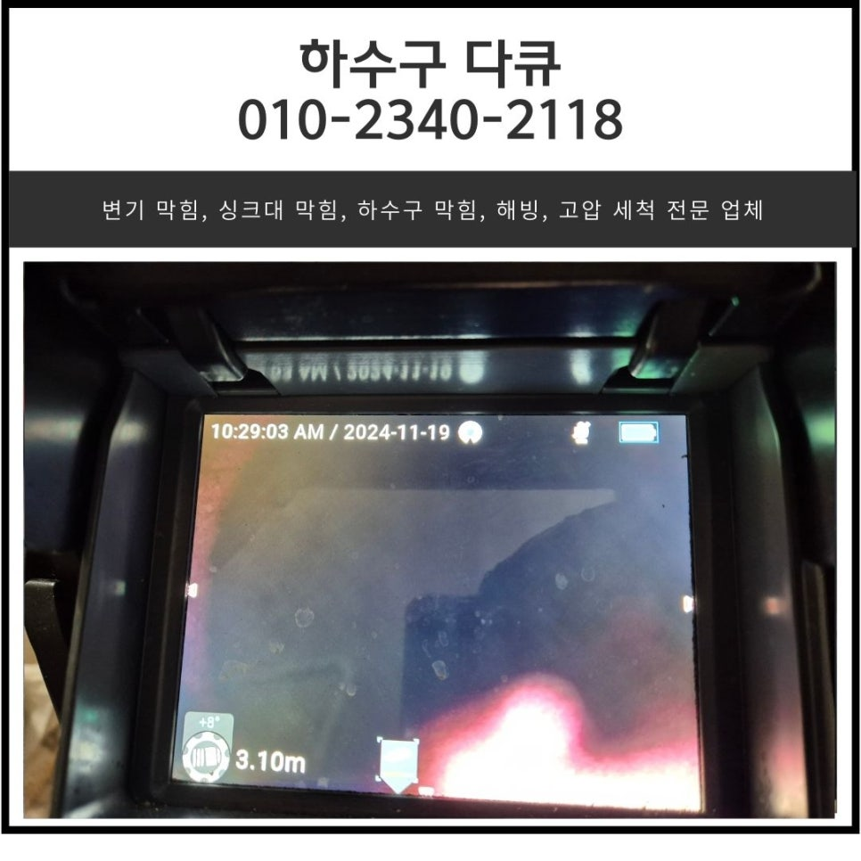
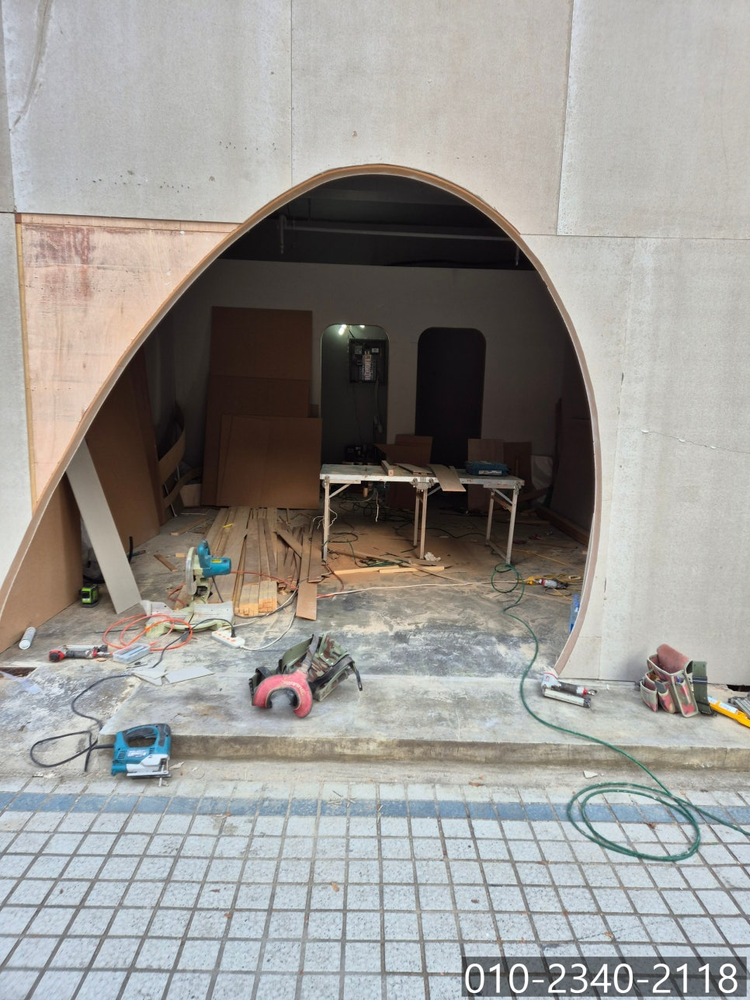
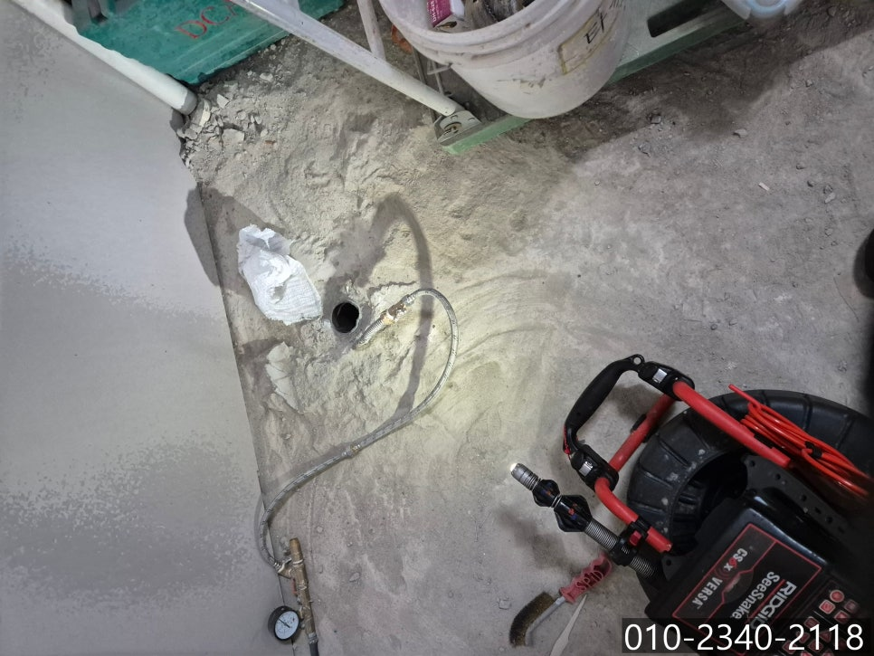
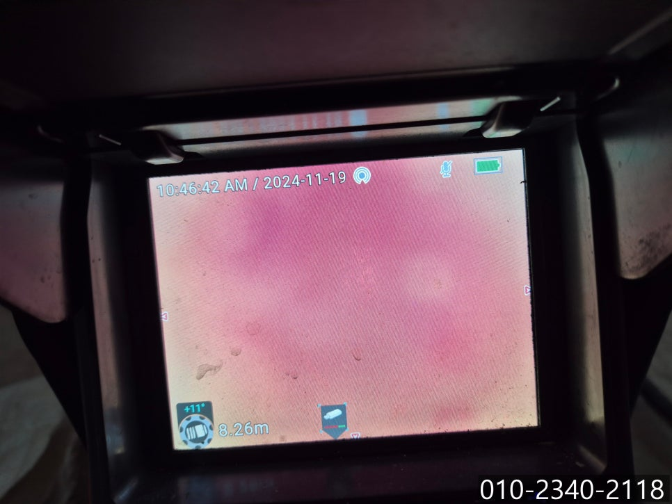
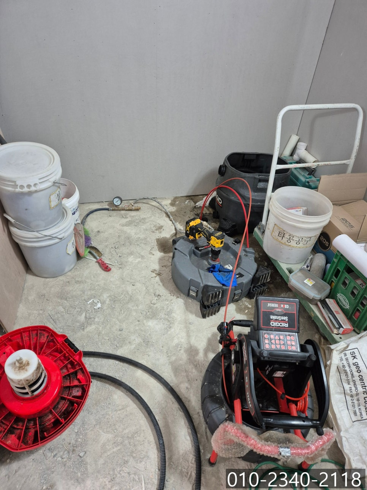
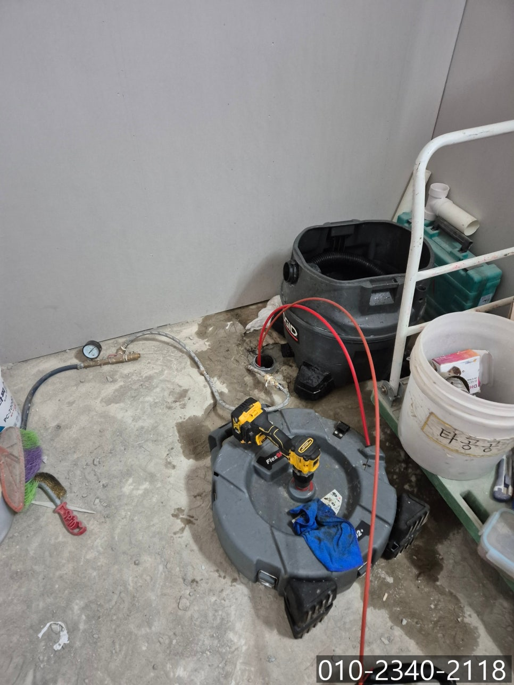
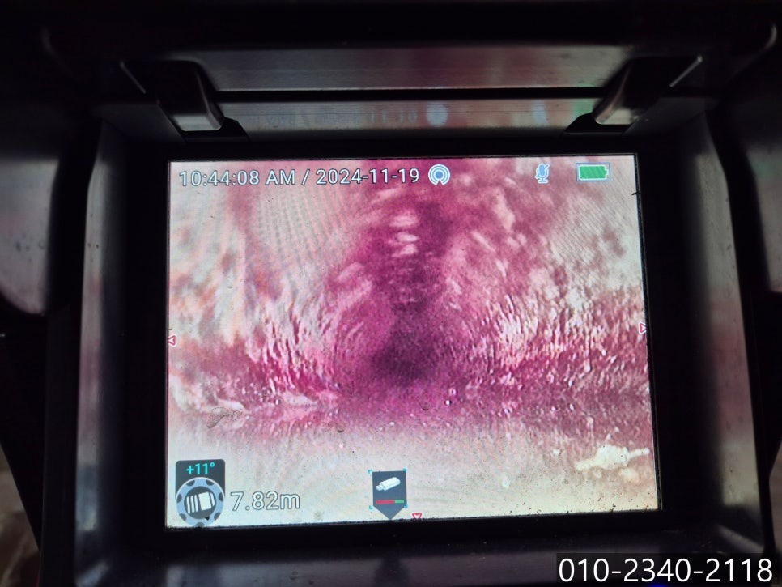

🏠 향남읍 싱크대 막힘 화성 향남 씽크대 역류 뚫어주는 전문 업체
화성 향남 싱크대막힘 전문 시공 후기

📋 작업 개요
- 위치: 화성 향남, 향남, 화성
- 서비스 유형: 싱크대막힘, 하수구막힘, 배관막힘, 역류해결, 뚫는업체, 배관청소, 설비공사
- 작업 일시: 2024. 11. 29. 9:10
- 업체명: 하수구수사대 (010-5615-2118)
🔍 문제 상황
안녕하세요.
향남읍 싱크대 막힘, 화성 향남 씽크대 역류 뚫어주는 전문 업체 하수구 다큐입니다.
최근 가정집이 이사를 하거나 매장 오픈을 위해 가게를 인수하는 경우 대부분 실내 인테리어를 진행하게 됩니다.
아무래도 실내 인테리어 공사를 진행하다 보면 먼지와 인테리어 자제 등 각종 쓰레기가 현장에 생기게 되는데요.
작업을 하다 보면 현장에 생긴 이물질이나 쓰레기, 먼지 등을 바로바로 치우기 어렵다 보니 싱크대 배관이나 화장실 배관 등으로 떨어져 배관이 막히는 경우가 종종 발생하고 있습니다.
이물질을 배관으로 떨어트렸을 때 인지하고 바로 제거한다면 별 탈 없겠지만, 인테리어를 하다 실수로 빠트리게 될 경우 이물질이 빠진 것을 알아차릴 수 없다 보니 하수구 막힘이 발생한 것을 모르는 경우가 많아요.
대부분 인테리어를 거의 마치고 점검하는 과정에서 발견할 수밖에 없는 구조이다 보니, 이런 경우에는 화성 향남 씽크대 역류 뚫어주는 전문 업체의 도움을 받아 해결하시는 게 좋습니다.

🔎 원인 분석
💡 전문가 진단: 정밀 진단 장비를 사용하여 슬러지의 고착 여부를 판명하고 타격/세척 작업을 실시했습니다.
이번에 소개해 드릴 현장 역시 앞서 말씀드렸던 것처럼 매장 인테리어 현장이었어요.
한참 공사가 진행 중이다 보니 하수구 역류나 막힘 등 문제가 발생했던 것은 아니었고, 인테리어를 의뢰하신 고객님께서 가게를 오픈하면서 하수구 청소도 요청하셨다고 해요.
아직 매장에 싱크대가 설치되기 전이다 보니 다른 현장보다 작업이 편한 구조였어요.
향남읍 싱크대 막힘 현장에 필요한 장비를 챙겨 방문해 보니 바닥에 매립되어 있는 배관을 확인할 수 있었습니다.
향남읍 싱크대 막힘 배관으로 내시경 카메라를 넣어보니 기름 슬러지로 인해 붉게만 보이는 상태였어요.
인테리어 사장님께 배관의 상태와 구조에 대해 설명을 해드리고 배관 스케일링 작업을 진행하기로 했습니다.
화성 향남 씽크대 역류 뚫어주는 전문 업체 하수구 다큐는 플렉스 샤프트 장비를 사용해 배관 청소를 진행하기로 했어요.
플렉스 샤프트 장비의 경우 배관을 막고 있는 각종 이물질과 기름 슬러지를 타격해 제거하는 역할을 합니다.

🔧 작업 과정
몇 차례 플렉스 샤프트 장비를 이용해 이물질을 잘게 부셔 제거하는 작업을 반복하니 통수가 조금씩 진행되면서 배관의 형태가 드러나기 시작합니다.
하지만 배관에 쌓여있던 이물질과 물 등이 흘러나가는 속도가 뭔가 조금 느리다고 느껴져, 잔여 이물질을 청소해가면서 배관의 깊은 곳까지 꼼꼼하게 체크해 보는 작업을 진행했어요.
그러던 와중에 평소에 접하기 힘든 파란색의 이물질을 확인했습니다.
9.82m 진입된 구간에서 발견된 이물질이다 보니 이물질을 제거하기 쉽지 않아 보입니다.
그렇다고 포기할 하수구 다큐가 아니죠!!!
내시경 카메라로 이물질의 위치를 파악하며 플렉스 샤프트 장비 끝에 걸어 이물질 제거 작전을 진행했습니다.
세상 밖으로 나온 이물질을 보니 파란 비닐이었어요.
이런 이물질이 배관 내부에 자리 잡고 있을 거라고 생각도 못 했는데 인테리어를 의뢰하신 고객님께서 감이 좋으신 것 같습니다.
마지막으로 배수가 잘 되는지 테스트를 진행해야 하는데요.
싱크대가 설치되기 전이다 보니 석션통에 많은 양의 물을 받아 한꺼번에 흘려보내 배관에 파손이나 다른 문제들은 없는지 꼼꼼하게 확인시켜드리고 작업을 마무리할 수 있었습니다.
하수구 막힘이 발생하는 원인이 다양하다 보니 그 원인과 상황에 따라 알맞게 대처하는 것이 정말 중요합니다.
화성 향남 씽크대 역류 뚫어주는 전문 업체 하수구 다큐는 다양한 현장 경험을 바탕으로 쌓은 노하우를 이용해 어떤 현장이던 포기하지 않고 해결해 드리고 있습니다.


✅ 작업 완료
지금 하수구 막힘으로 고민하고 계신다면 연락 주세요!
시원하게 해결해 드리겠습니다.
경기도 화성시 향남읍 상신하길로328번길 26 5층 505호 5호




⚠️ 주방 싱크대 배관 막힘 예방 수칙
- ✅ 기름기가 묻은 식기나 프라이팬은 설거지 전 키친타올로 반드시 기름때를 닦아내세요.
- ✅ 주기적으로 싱크대 개수대에 뜨거운 물을 가득 받아 한 번에 내려 배관 내부 기름을 씻어내세요.
- ✅ 배수구 거름망을 미세한 필터로 사용하시고 음식물 찌꺼기가 틈으로 새어 들지 않게 관리하세요.
- ✅ 베이킹소다와 식초를 뜨거운 물과 함께 일주일에 한 번씩 부어주면 배관 살균과 막힘 예방에 좋습니다.
💡 핵심 정리
- 확실한 장비 작업(내시경 점검 및 샤프트 스케일링)으로 원인을 뿌리 뽑습니다.
- 작업 후 1년 이내에 동일한 부위 재발 시 100% 무상 A/S 서비스를 보장합니다.
- 서울 · 경기 · 인천 전 지역에 24시간 언제든 긴급 출동할 수 있도록 항시 대기 중입니다.
❓ 자주 묻는 질문 (FAQ)
🚨 화성 향남 싱크대막힘 문제로 고민이신가요?
정확한 원인 진단과 확실한 시공으로 재발 없는 해결을 약속드립니다.
24시간 긴급 출동 | 서울 · 경기 · 인천 전지역 | 1년 내 재발 시 무상 A/S